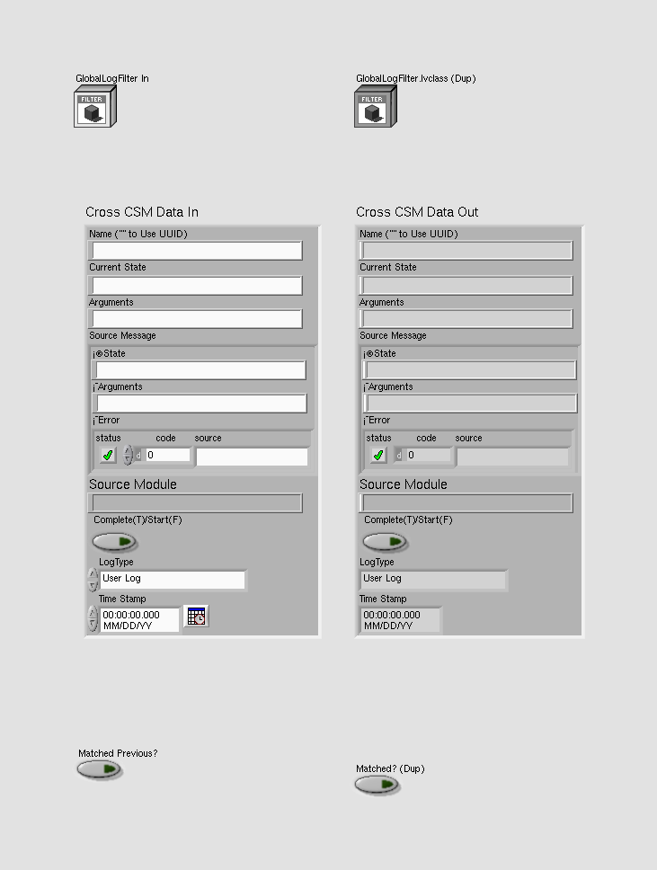
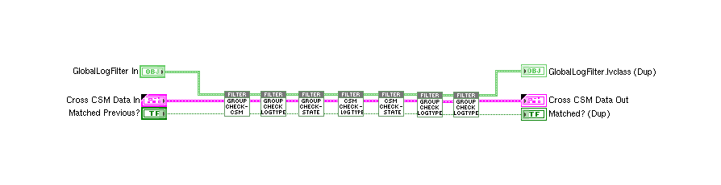
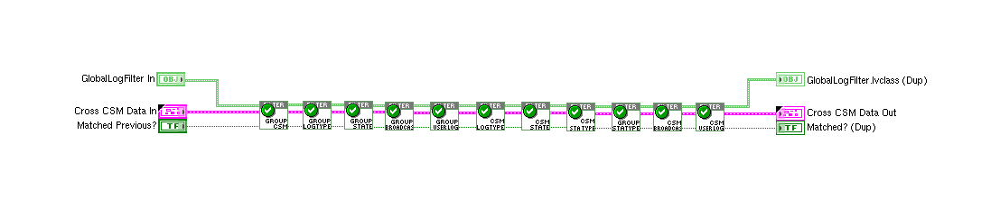
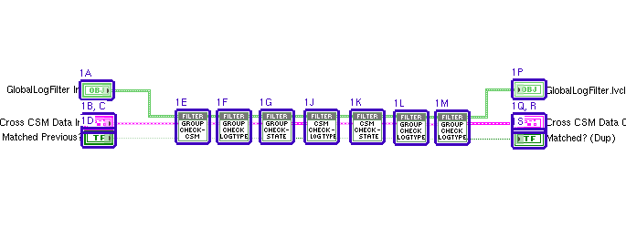
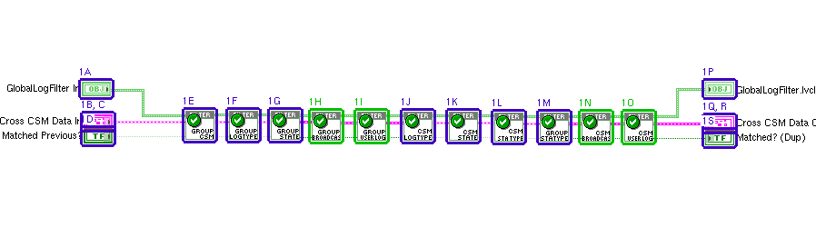
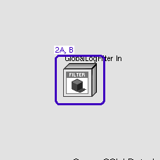
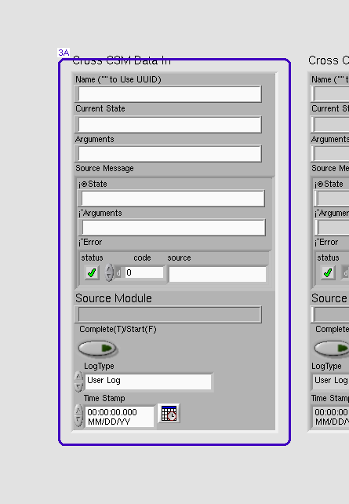
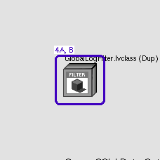
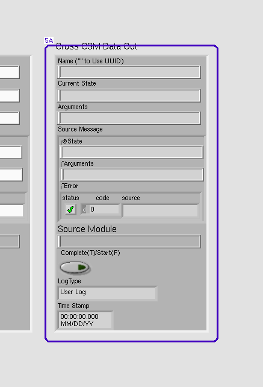

LabVIEW VI Comparison Report
07:03:33 10/29/2026
First VI: /workspace-base/src/user.lib/_NEVSTOP/Communicable State Machine(CSM)/_Support/GlobalEvent/LogFilter/LogFilter - Check.viSecond VI: /workspace/src/user.lib/_NEVSTOP/Communicable State Machine(CSM)/_Support/GlobalEvent/LogFilter/LogFilter - Check.vi
| Front Panel Overview | ||
|
 |

| |
| Block Diagram Overview | ||
|
 |
 |
- Front Panel
- Front Panel Position/Size
- Block Diagram Functional
- Block Diagram Cosmetic
- VI Attribute
Detailed Information
1. Block Diagram objects
| /workspace-base/src/user.lib/_NEVSTOP/Communicable State Machine(CSM)/_Support/GlobalEvent/LogFilter/LogFilter - Check.vi | /workspace/src/user.lib/_NEVSTOP/Communicable State Machine(CSM)/_Support/GlobalEvent/LogFilter/LogFilter - Check.vi | |
|
 |
 |
- Front Panel Terminal "GlobalLogFilter In" - moved : changed from "(514,335)" to "(514,334)"
- Front Panel Terminal "Cross CSM Data In" - numeric representation : changed from "'Cross CSM Data In': typedef 'Communicable State Machine.lvlib:_CSM_GlobalLog_MSG.ctl'\ncluster of 8 elements \n 'Name ("" to Use UUID)': string \n 'Current State': string \n 'Arguments': string \n 'Source Message': typedef 'Communicable State Ma" to "'Cross CSM Data In': typedef 'Communicable State Machine.lvlib:_CSM_GlobalLog_MSG.ctl'\ncluster of 8 elements \n 'Name ("" to Use UUID)': string \n 'Current State': string \n 'Arguments': string \n 'Source Message': typedef 'Communicable State Ma"
- Front Panel Terminal "Cross CSM Data In" - moved : changed from "(516,371)" to "(516,370)"
- Front Panel Terminal "Matched Previous?" - moved : changed from "(516,387)" to "(516,386)"
- SubVI "Communicable State Machine.lvlib:LogFilter.lvclass:Group Check - CSM.vi" - moved : changed from "(619,367)" to "(628,366)"
- SubVI "Communicable State Machine.lvlib:LogFilter.lvclass:Group Check - LogType.vi" - moved : changed from "(664,367)" to "(676,366)"
- SubVI "Communicable State Machine.lvlib:LogFilter.lvclass:Group Check - State.vi" - moved : changed from "(711,367)" to "(722,366)"
- SubVI "Communicable State Machine.lvlib:LogFilter.lvclass:Group Check - Broadcast.vi" - added at (767,367)
- SubVI "Communicable State Machine.lvlib:LogFilter.lvclass:Group Check - UserLog.vi" - added at (817,367)
- SubVI "Communicable State Machine.lvlib:LogFilter.lvclass:CSM Check - LogType.vi" - moved : changed from "(760,367)" to "(868,367)"
- SubVI "Communicable State Machine.lvlib:LogFilter.lvclass:CSM Check - State.vi" - moved : changed from "(810,367)" to "(918,367)"
- SubVI "Communicable State Machine.lvlib:LogFilter.lvclass:CSM Check - StateType.vi" - moved : changed from "(858,368)" to "(968,368)"
- SubVI "Communicable State Machine.lvlib:LogFilter.lvclass:Group Check - StateType.vi" - moved : changed from "(903,368)" to "(1018,368)"
- SubVI "Communicable State Machine.lvlib:LogFilter.lvclass:CSM Check - Broadcast.vi" - added at (1064,368)
- SubVI "Communicable State Machine.lvlib:LogFilter.lvclass:CSM Check - UserLog.vi" - added at (1111,368)
- Front Panel Terminal "GlobalLogFilter.lvclass (Dup)" - moved : changed from "(987,334)" to "(1200,334)"
- Front Panel Terminal "Cross CSM Data Out" - numeric representation : changed from "'Cross CSM Data Out': typedef 'Communicable State Machine.lvlib:_CSM_GlobalLog_MSG.ctl'\ncluster of 8 elements \n 'Name ("" to Use UUID)': string \n 'Current State': string \n 'Arguments': string \n 'Source Message': typedef 'Communicable State M" to "'Cross CSM Data Out': typedef 'Communicable State Machine.lvlib:_CSM_GlobalLog_MSG.ctl'\ncluster of 8 elements \n 'Name ("" to Use UUID)': string \n 'Current State': string \n 'Arguments': string \n 'Source Message': typedef 'Communicable State M"
- Front Panel Terminal "Cross CSM Data Out" - moved : changed from "(987,371)" to "(1200,372)"
- Front Panel Terminal "Matched? (Dup)" - moved : changed from "(987,388)" to "(1200,388)"
- wiring changes
2. Front Panel - LabVIEW Object
| /workspace-base/src/user.lib/_NEVSTOP/Communicable State Machine(CSM)/_Support/GlobalEvent/LogFilter/LogFilter - Check.vi | /workspace/src/user.lib/_NEVSTOP/Communicable State Machine(CSM)/_Support/GlobalEvent/LogFilter/LogFilter - Check.vi | |

|
 |
- LabVIEW Object "GlobalLogFilter In" - data value : changed from "(Communicable State Machine.lvlib:LogFilter.lvclass: {Rules => {Global => {CSM => [], LogType => [], State => [], StateType => []}, CSM => {LogType => [], State => [], StateType => []}, PeriodicLog => {Enable => True, Threshold(#/s) => 2.000E+0, CheckPeriod(s) => 1.000E+0}}, Cache => {Global => {CSM => [], State => []}, CSM => {LogTypeMap => <Variant\n: Empty>, StateMap => <Variant\n: Empty>, StateTypeMap => <Variant\n: Empty>}}})" to "(Communicable State Machine.lvlib:LogFilter.lvclass: {Rules => {Global => {CSM => [], LogType => [], State => [], StateType => [], Broadcast => [], UserLog => []}, CSM => {LogType => [], State => [], StateType => [], Broadcast => [], UserLog => []}, PeriodicMessageFilter => {Enable => True, Threshold(#/s) => 2.000E+0, CheckPeriod(s) => 1.000E+0}}, Cache => {Global => {CSM(lower) => [], State(lower) => [], Broadcast(lower) => [], UserLog(lower) => []}, CSM => {LogTypeMap => <Variant\n: Empty>, StateMap => <Variant\n: Empty>, StateTypeMap => <Variant\n: Empty>, BroadcastMap => <Variant\n: Empty>, UserLogMap => <Variant\n: Empty>}}})"
- LabVIEW Object "GlobalLogFilter In" - default data value : changed from "(Communicable State Machine.lvlib:LogFilter.lvclass: {Rules => {Global => {CSM => [], LogType => [], State => [], StateType => []}, CSM => {LogType => [], State => [], StateType => []}, PeriodicLog => {Enable => True, Threshold(#/s) => 2.000E+0, CheckPeriod(s) => 1.000E+0}}, Cache => {Global => {CSM => [], State => []}, CSM => {LogTypeMap => <Variant\n: Empty>, StateMap => <Variant\n: Empty>, StateTypeMap => <Variant\n: Empty>}}})" to "(Communicable State Machine.lvlib:LogFilter.lvclass: {Rules => {Global => {CSM => [], LogType => [], State => [], StateType => [], Broadcast => [], UserLog => []}, CSM => {LogType => [], State => [], StateType => [], Broadcast => [], UserLog => []}, PeriodicMessageFilter => {Enable => True, Threshold(#/s) => 2.000E+0, CheckPeriod(s) => 1.000E+0}}, Cache => {Global => {CSM(lower) => [], State(lower) => [], Broadcast(lower) => [], UserLog(lower) => []}, CSM => {LogTypeMap => <Variant\n: Empty>, StateMap => <Variant\n: Empty>, StateTypeMap => <Variant\n: Empty>, BroadcastMap => <Variant\n: Empty>, UserLogMap => <Variant\n: Empty>}}})"
3. Front Panel - Type Definition
| /workspace-base/src/user.lib/_NEVSTOP/Communicable State Machine(CSM)/_Support/GlobalEvent/LogFilter/LogFilter - Check.vi | /workspace/src/user.lib/_NEVSTOP/Communicable State Machine(CSM)/_Support/GlobalEvent/LogFilter/LogFilter - Check.vi | |

|
 |
- Enum - number of text items : changed from "12" to "14"
4. Front Panel - LabVIEW Object
| /workspace-base/src/user.lib/_NEVSTOP/Communicable State Machine(CSM)/_Support/GlobalEvent/LogFilter/LogFilter - Check.vi | /workspace/src/user.lib/_NEVSTOP/Communicable State Machine(CSM)/_Support/GlobalEvent/LogFilter/LogFilter - Check.vi | |

|
 |
- LabVIEW Object "GlobalLogFilter.lvclass (Dup)" - data value : changed from "(Communicable State Machine.lvlib:LogFilter.lvclass: {Rules => {Global => {CSM => [], LogType => [], State => [], StateType => []}, CSM => {LogType => [], State => [], StateType => []}, PeriodicLog => {Enable => True, Threshold(#/s) => 2.000E+0, CheckPeriod(s) => 1.000E+0}}, Cache => {Global => {CSM => [], State => []}, CSM => {LogTypeMap => <Variant\n: Empty>, StateMap => <Variant\n: Empty>, StateTypeMap => <Variant\n: Empty>}}})" to "(Communicable State Machine.lvlib:LogFilter.lvclass: {Rules => {Global => {CSM => [], LogType => [], State => [], StateType => [], Broadcast => [], UserLog => []}, CSM => {LogType => [], State => [], StateType => [], Broadcast => [], UserLog => []}, PeriodicMessageFilter => {Enable => True, Threshold(#/s) => 2.000E+0, CheckPeriod(s) => 1.000E+0}}, Cache => {Global => {CSM(lower) => [], State(lower) => [], Broadcast(lower) => [], UserLog(lower) => []}, CSM => {LogTypeMap => <Variant\n: Empty>, StateMap => <Variant\n: Empty>, StateTypeMap => <Variant\n: Empty>, BroadcastMap => <Variant\n: Empty>, UserLogMap => <Variant\n: Empty>}}})"
- LabVIEW Object "GlobalLogFilter.lvclass (Dup)" - default data value : changed from "(Communicable State Machine.lvlib:LogFilter.lvclass: {Rules => {Global => {CSM => [], LogType => [], State => [], StateType => []}, CSM => {LogType => [], State => [], StateType => []}, PeriodicLog => {Enable => True, Threshold(#/s) => 2.000E+0, CheckPeriod(s) => 1.000E+0}}, Cache => {Global => {CSM => [], State => []}, CSM => {LogTypeMap => <Variant\n: Empty>, StateMap => <Variant\n: Empty>, StateTypeMap => <Variant\n: Empty>}}})" to "(Communicable State Machine.lvlib:LogFilter.lvclass: {Rules => {Global => {CSM => [], LogType => [], State => [], StateType => [], Broadcast => [], UserLog => []}, CSM => {LogType => [], State => [], StateType => [], Broadcast => [], UserLog => []}, PeriodicMessageFilter => {Enable => True, Threshold(#/s) => 2.000E+0, CheckPeriod(s) => 1.000E+0}}, Cache => {Global => {CSM(lower) => [], State(lower) => [], Broadcast(lower) => [], UserLog(lower) => []}, CSM => {LogTypeMap => <Variant\n: Empty>, StateMap => <Variant\n: Empty>, StateTypeMap => <Variant\n: Empty>, BroadcastMap => <Variant\n: Empty>, UserLogMap => <Variant\n: Empty>}}})"
5. Front Panel - Type Definition
| /workspace-base/src/user.lib/_NEVSTOP/Communicable State Machine(CSM)/_Support/GlobalEvent/LogFilter/LogFilter - Check.vi | /workspace/src/user.lib/_NEVSTOP/Communicable State Machine(CSM)/_Support/GlobalEvent/LogFilter/LogFilter - Check.vi | |
|
 |

|
- Enum - number of text items : changed from "12" to "14"
6. VI Attribute - Execution (VI Properties)
- Inline